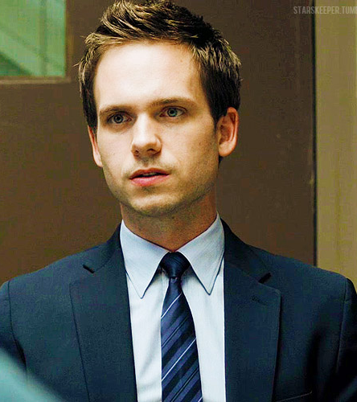
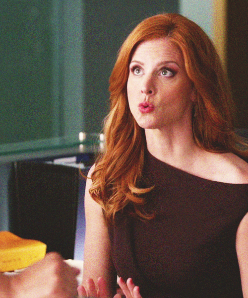

CHARACTERS

A hot, young brainiac who cheated his way into the profession with a fake Harvard degree, Mike Ross's character is based on an absurd premise and yet his appeal is enduring.

With her razor sharp wit and knowledge of all the firm's happenings, Donna is admired and feared by everyone there, and she's not afraid to wield that power when it suits her needs.

Louis is a highly emotional and reactive leader who is often torn between his desire for power and his loyalty to his team. He is brilliant but he can be insecure and needs more confidence from Harvey.
Jessica Pearson exudes confidence and power in every scene she graces. Her sharp intelligence and ability to stay one step ahead in the high-pressure world of law make her a true maverick.